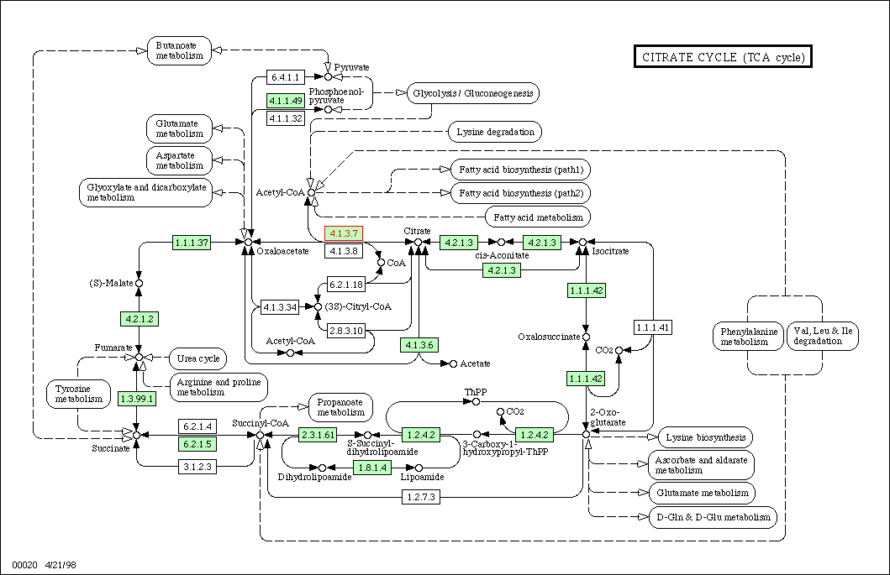
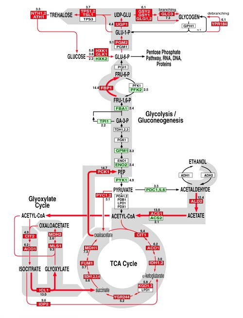

Lecture 2 Feb 2001 Per Kraulis
The citric acid cycle, also called the Krebs cycle, or TCA (tricarboxylic acid) cycle, is a central part of the respiratory energy metabolism of many organisms. A number of enzymes act on substrates in a cycle, where an acetyl group from acetyl-coenzyme A is covalently added to oxaloacetate and then converted into two molecules of CO2 and reducing equivalents.
In one of the first experiments using microarrays for monitoring gene expression changes (DeRisi, Iyer and Brown, Science (1997) 278, 680-686), a yeast culture was allowed to grow in glucose-rich medium until the glucose ran out. The metabolism then changes from anaerobic fermentation of glucose to ethanol, to aerobic metabolism of ethanol. This is the so-called diauxic shift. The gene expression data shows a concerted change, where the TCS cycle genes are up-regulated as the glucose level goes down (red labels), at the same time as the glycolysis genes are down-regulated (green).
